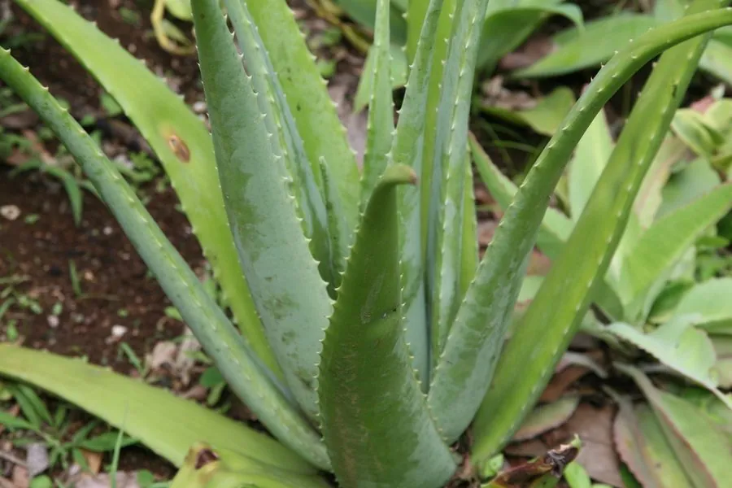

多肉植物 · 植物界
芦荟 Aloe vera

阿福花科多年生肉质草本，叶片肥厚含凝胶，可入药和护肤，耐旱好养，是常见的家庭盆栽与经济植物。
- 分类
- 门被子植物门纲木兰纲目天门冬目科阿福花科属芦荟属
- 栖息环境
- 地中海沿岸及阿拉伯半岛的干旱石质坡地，喜光、耐旱
- 地理分布
- 原产地中海沿岸及阿拉伯半岛，世界各地广泛栽培，中国南方有种植
- 保护级别
- 暂无评估
物种志
芦荟为阿福花科芦荟属多年生肉质草本，株高 30–60 厘米，有时可达 1 米，茎短。叶片基生、密集丛生，披针形，长 30–50 厘米，肥厚多汁，灰绿色，边缘有白色齿刺。花葶自叶丛抽出，花管状，黄色或橙黄色，花期 2–3 月；果实为蒴果。
芦荟原产地中海沿岸及阿拉伯半岛，喜温暖、阳光充足和干燥的环境，耐旱怕积水，不耐寒，冬季需保持在 5℃ 以上。叶片内的透明凝胶含有芦荟多糖、氨基酸等成分，可制成护肤品、芦荟胶，中医也用它入药；叶片表皮附近的黄色汁液含大黄素类物质，有刺激性致泻作用，不可直接食用。芦荟可用分株或侧芽扦插繁殖，管理粗放，是家庭常见的“懒人植物”。
形态与习性
- 株高30–60 厘米，可达 1 米
- 花期2–3 月，花管状，黄色或橙黄色
- 果期花后结蒴果
- 光照喜充足阳光，夏季可适度遮阴
- 水分耐旱，盆土干透再浇，忌积水
- 土壤疏松透气、排水良好的沙质土
- 繁殖分株、侧芽扦插
- 主要用途药用、护肤、室内盆栽
趣味知识
- 芦荟叶片内的透明凝胶可制成护肤品，但表皮附近的黄色汁液有刺激性。
- 古埃及人把芦荟称为“不朽之草”，用于护肤和伤口处理。
- 芦荟靠基部长出的侧芽繁殖，侧芽长到 8–10 厘米时分离即可成活。
- 芦荟耐旱怕涝，盆土长期潮湿容易烂根。